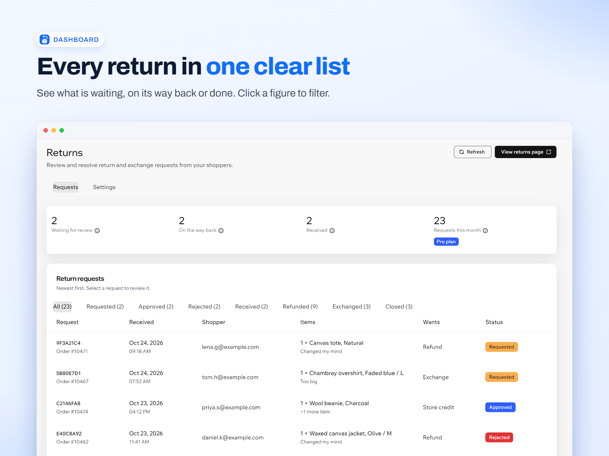
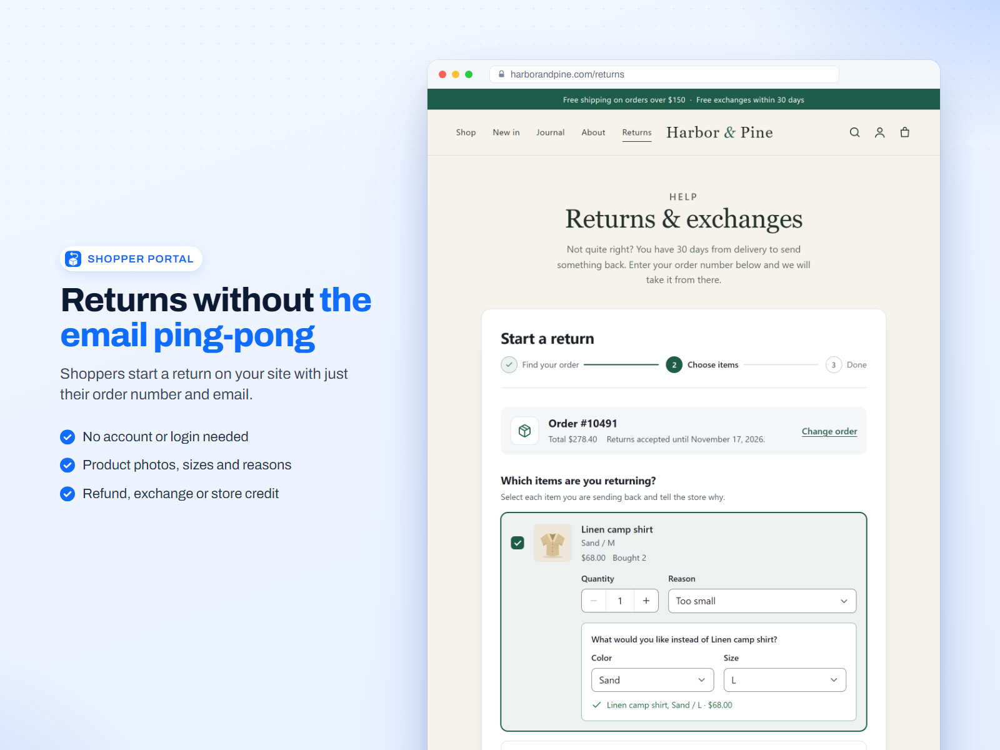
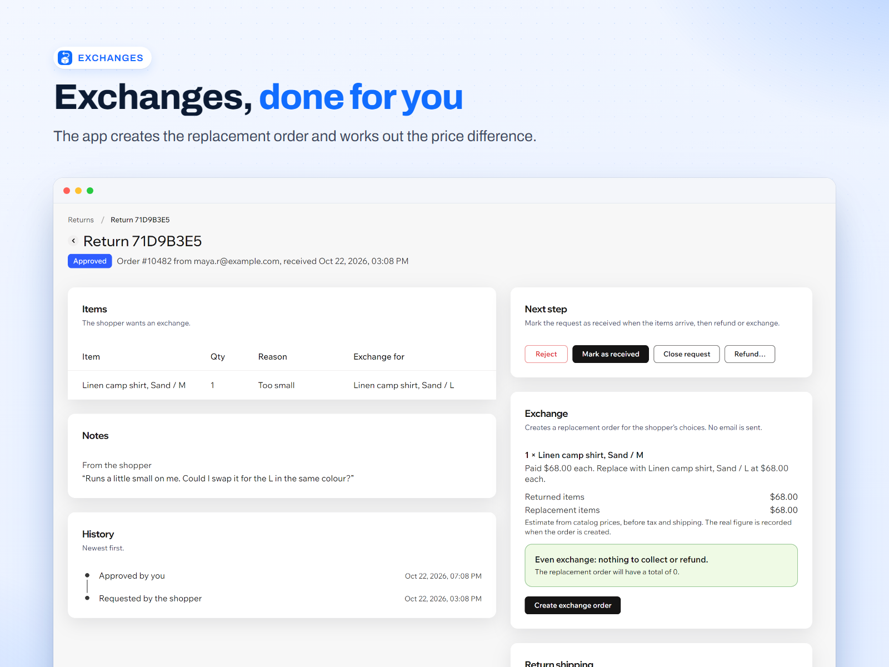
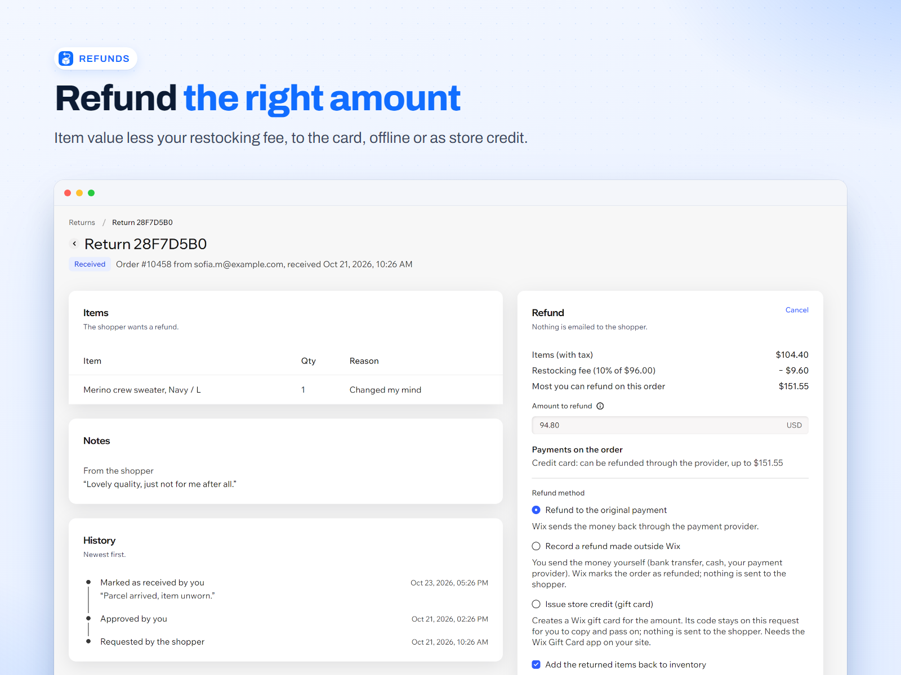
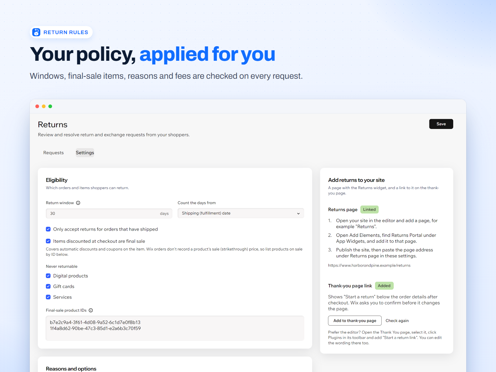
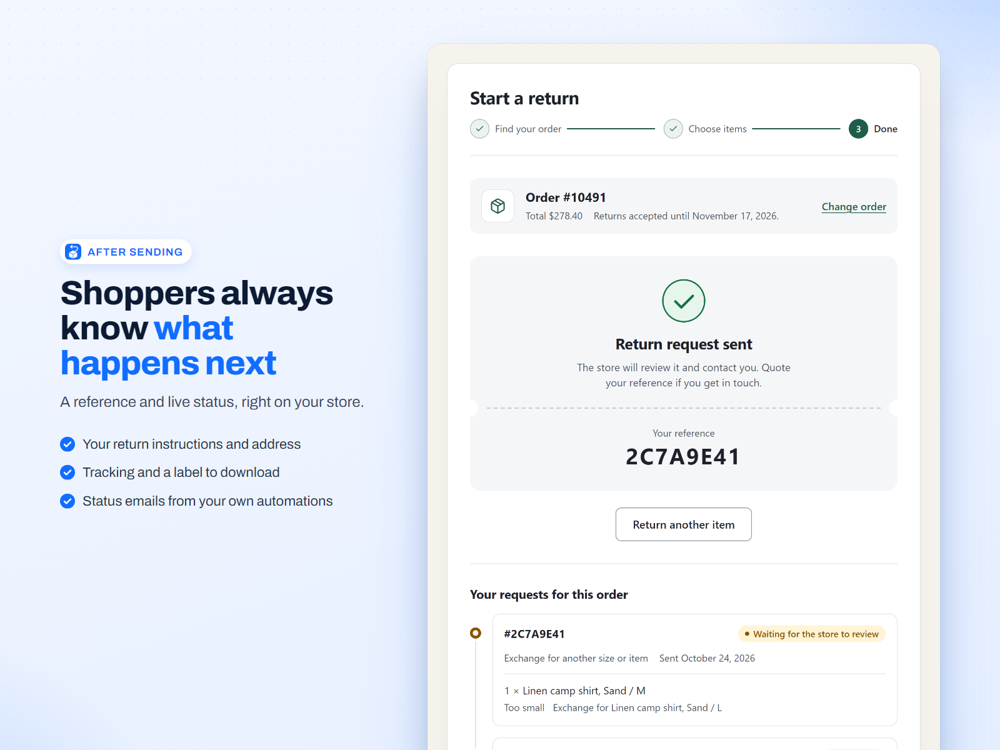

Wix App Market app for Wix Stores
Let shoppers start a return without logging in.
Returns Portal gives your Wix store a returns and exchanges page. Shoppers enter their order number and checkout email, pick what to send back and why, and ask for a refund, an exchange or store credit. You review every request in your Wix dashboard and act on it there. The emails your shoppers get come from your own Wix Automations, not from us.
- Order number
- 10042
- sam@example.com
Order found. Returns accepted until 14 November 2026.
- Linen shirt, size Mx 1
- Canvas capx 1
- Reason
- Wrong size
- What would you like?
- Exchange for size L
Send return request
What it looks like
The shopper's page on your site, and the screens you use in your Wix dashboard. The store and orders are made up; the screens are the real app.
-

DashboardEvery request in one list, with its status. -

Shopper portalNo login. Order number and email are enough. -

ExchangeThe replacement order, with the price difference worked out. -

RefundAmount per item, less any restocking fee. -

Return rulesYour window, reasons, final-sale list and fees. -

After sendingA reference, live status and the return label.
What the app does
Everything from the shopper's first request to the refund or the replacement order, kept on your own Wix site.
- Shopper portal, no login
- Shoppers type the order number and the email they used at checkout, tick the items and quantities to send back, pick a reason for each, add a note of up to 500 characters and ask for one of the options you offer. It works for guests and for members. The same two details show them the status of their request and your return instructions. Put the widget on any page in the Wix Editor; an optional "Start a return" link can sit on your thank-you page.
- Return rules
- Set the window in days, counted from the shipping date or the purchase date, and decide whether only shipped orders can be returned. Mark products as final sale by product ID, or make every item that got a discount at checkout final sale. Digital items, gift cards and services are excluded by default. Write your own list of reasons, choose which of refund, exchange and store credit you offer, set a restocking fee, say who pays return shipping, and add your instructions and return address.
- Refunds, including offline payments
- Approve or reject a request with a note, and mark the parcel received. Refunds to the original payment go through Wix order billing; the amount starts at the value of the returned items minus your restocking fee, and you can change it. Wix cannot refund an offline payment such as cash or bank transfer, so the app records the request as refunded outside Wix and you send the money yourself.
- Exchanges and the price difference
- The shopper picks another variant of the same product. From the dashboard the app creates the replacement order in Wix with the value of the returned item taken off, so an even swap totals nothing. If the new item costs more, the replacement order carries the balance for the shopper to pay. If it costs less, you refund the difference from the dashboard.
- Store credit as Wix gift cards
- Instead of a payment refund you can issue store credit. The app creates a Wix gift card for the amount and keeps its code on the request, where you can copy it. You pass it on to the shopper, by hand or in your own Wix Automations email. This needs the Wix Gift Card app on your site.
- Return shipping details and labels
- Add instructions, a return address, a carrier, a tracking number and a link to a return label to any request. While the parcel is on its way, the shopper sees them on your site, with a link to download the label. The app does not buy or print labels: you paste the link to one you made with your carrier.
- Status emails from your own Wix Automations
- Every new request and every status change (requested, approved, rejected, received, refunded, exchanged, closed) is reported to Wix Automations as a "Return request status changed" trigger, with the order number, items, reason, your note, return address and label link. You build the emails in your own automations, so they use your sender and branding. Nothing is sent until you switch an automation on, and the app sends no email itself.
- Ask Aria
- Returns Portal works with Aria, the AI assistant in your Wix dashboard. Ask it which returns are waiting, look one up by its reference or order number, approve or reject a request with a note for the shopper, or get this month's figures and how close you are to the free plan's limit. Aria acts only when you ask, and it follows the same rules as the Returns page.
- Catalog V1 and V3
- Works with Wix Stores on Catalog V1 and on Catalog V3, including choosing another variant for an exchange on either.
How it works
The shopper asks
On your returns page the shopper enters the order number and email. The app checks them against the order, shows the items still inside your rules and takes the request.
You review
The request appears on the Returns page in your Wix dashboard. Approve or reject it with a note, add the return instructions, address and label link, and mark it received when the parcel arrives.
You refund or exchange
Refund to the original payment, record an offline refund, issue store credit or create the replacement order. The shopper sees the new status on your site, and your Wix Automations send the emails.
Set-up: install the app from the Wix App Market, add the Returns Portal widget to a page in the Wix Editor, set your Return rules in the dashboard and, if you want status emails, build them in Wix Automations.
Pricing
Free for a small store. One monthly price when you need more.
Free
$0
- Up to 5 return requests a month
- Every feature: portal, rules, refunds, exchanges, store credit, shipping details and Automations
- Requests you already have stay open and can be handled after the limit
Pro Billed by Wix
$19 / month
- Unlimited return requests
- Everything in Free
- 17% less when billed yearly
- 14-day free trial
Plans are billed by Wix, and you can change or cancel them through Wix.
How requests are counted: every request a shopper sends counts once, whatever happens to it afterwards, including rejected ones. The count restarts on the 1st of each month (UTC). When a store on the Free plan has used its 5, shoppers are told the store cannot take more online return requests this month and to contact the store. Requests you already received, and everything you do with them, are never blocked.
FAQ
Do shoppers need a Wix account?
No. They use the order number and the email address they checked out with. Guests and logged-in members can both use it.
Does it work with Catalog V1 and V3?
Yes. Returns Portal works with Wix Stores on Catalog V1 and on Catalog V3, including picking another variant for an exchange.
Does it work with offline payments?
Yes, for the record. Wix cannot refund cash, bank transfer or other offline payments, so the app marks the request as refunded outside Wix and you send the money yourself. Returns Portal never holds or moves money. Refunds to the original payment go through Wix order billing.
Why can't it see a product's sale price?
A Wix order records the price the buyer paid, not the product's catalog sale price (the price before the sale). The app does see a discount applied to an item at checkout, such as a coupon on that item, and can make those items final sale. For products that are on sale in your catalog, add their product IDs to the final-sale list in Return rules, and they are made final sale by product ID.
Can I manage returns by asking Aria?
Yes. In your Wix dashboard, ask Aria things like "Which returns are waiting?", "Look up the return for order 10482" or "Approve return 7E2DDEEE". It can list, look up, approve and reject requests and give you this month's numbers. Refunds and exchanges stay on the Returns page, where you confirm the amount.
Does the app email my shoppers?
No. It reports each status change to Wix Automations, and you decide what to send, from your own sender and in your own words. Until you switch an automation on, nothing is sent.
What does store credit need?
The Wix Gift Card app on your site. The app creates a Wix gift card and shows its code on the request. It sends nothing itself, so you give the code to the shopper, or add it to your own automation email.
What data does it store, and where?
On your own Wix site, in collections owned by the app: return requests (order number, buyer email, items, reasons, notes, status history, refund, exchange and shipping details), your return rules and failed-lookup counters. Nothing is sold or shared. See the Privacy Policy.
Can someone guess order numbers?
A request needs an order number and the email that matches it. Failed lookups are counted for the connection, the order number and the email address, and after a few the app refuses further attempts for up to an hour. The counters are kept under hashes, not the raw values.
Support and legal
Email support@creet.in with your site name or address, the order number involved and the exact message on screen. The Support page covers the common problems: the widget not showing on a page, a final-sale refusal, a closed return window, too many attempts and the monthly limit. Please do not send card numbers, bank details or passwords.
Read the Privacy Policy and the Terms of Service. Returns Portal is an independent app by Creet. It is not made or endorsed by Wix.